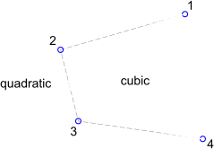
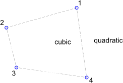
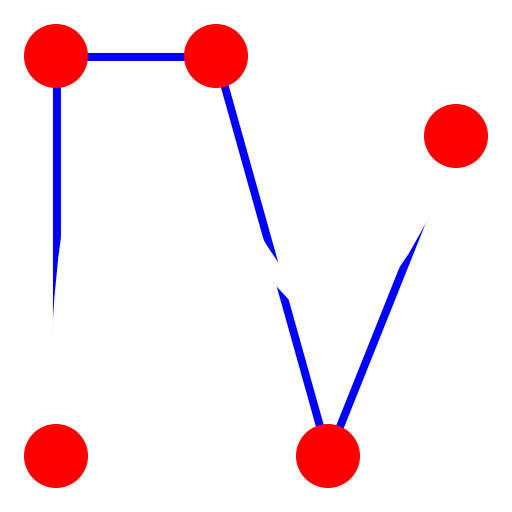
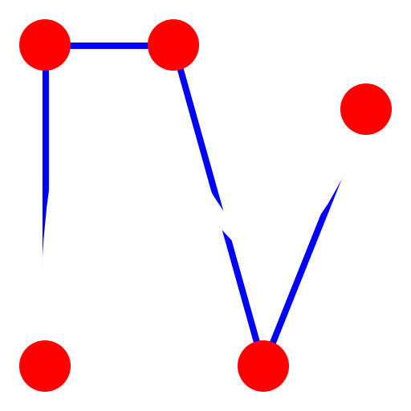

Draws spline curves from control points. Non-uniform rational B-Splines
(NURBS) with homogeneous weighting factors are the only splines that are
supported.
- Choose the degree of the spline in the options tool bar. Supported degrees
are 2 (quadratic b-spline) and 3 (cubic b-spline). The higher the degree, the
'smoother' the curve becomes.
Note that a quadratic b-spline requires by definition at least 3
control points while a cubic b-spline has at least 4 control points.
- Check the 'Closed' check box in the options tool bar if you want to create
a closed spline. Closed splines are continuous closed loops.
- Specify the control points. After defining the third (for quadratic
b-splines) or fourth (for cubic b-splines) control point, a preview will be
shown. You can remove the last control point again by clicking the 'Undo'
button in the options tool bar.
Example for two open splines (quadratic and cubic):

Example for two closed, periodic splines (quadratic and cubic):

 
